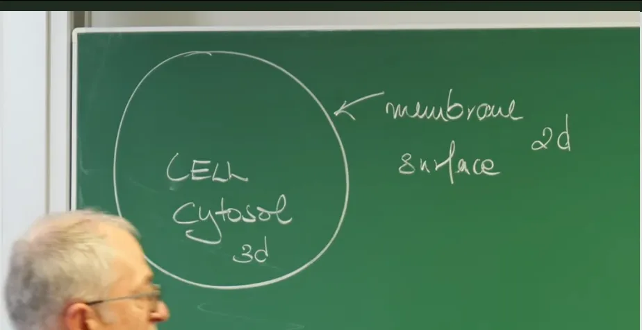
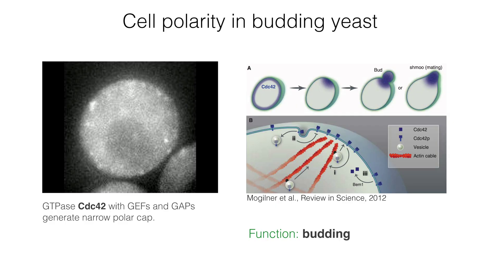
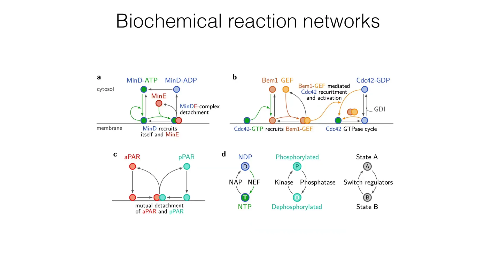
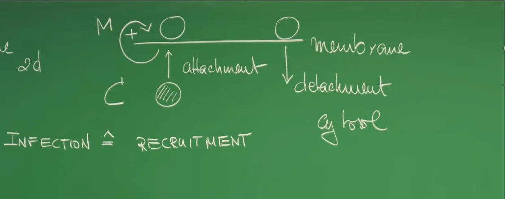
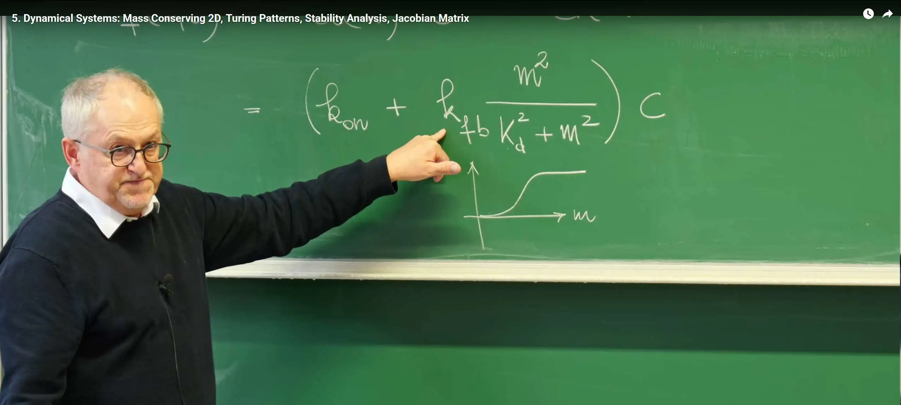
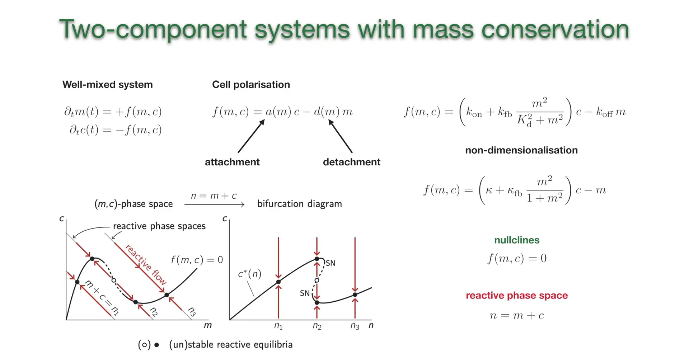
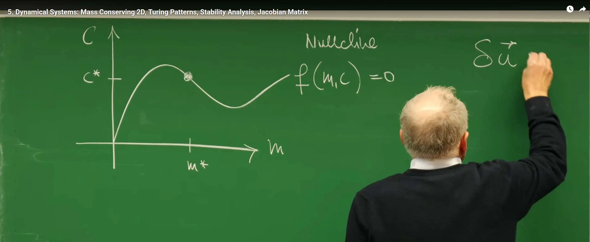
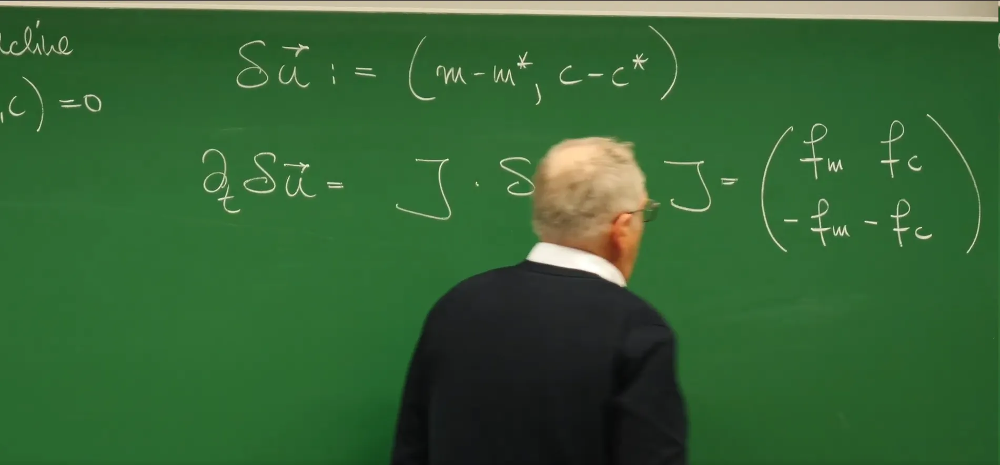

引言¶
前几节课程系统地探索了一维动力系统的世界。从第2讲中源于物理学的金茨堡-朗道理论和生物学的演化博弈论开始，揭示了复杂现象可被简化为低维非线性动力学问题。随后的第3讲和第4讲深入分析了这些一维系统的不动点、稳定性（线性稳定性分析），以及系统在控制参数变化时如何通过基本的分岔（如鞍点分岔、叉形分岔、尖点分岔与跨临界分岔）发生质变。这些一维模型为理解状态转换提供了坚实的基础。
然而，自然界中的自组织现象，尤其是在生物学中，其复杂性远超一维模型所能描述的范畴。这些系统通常涉及多种相互作用的组分，并且其动态行为受到基本物理定律的严格约束。这节课将从一维系统扩展到二维系统，并引入一个至关重要的物理约束——质量守恒定律。这个约束条件不仅使模型更贴近生物现实，也从根本上改变了系统的动力学特性和分析方法。
这节课将以细胞极性的建立这一核心生物学问题为切入点。细胞极性是指细胞内部物质分布不均，从而形成特定功能轴向的过程（如酵母出芽）。这背后是蛋白质在细胞质（三维体）和细胞膜（二维表面）之间的动态穿梭与相互作用。将构建一个描述此过程的二维动力学模型，并首先分析其在“充分混合”（即忽略空间分布）假设下的稳态行为。通过对该系统的深入分析，将掌握二维系统中的零斜线分析、分岔图构建，以及如何利用雅可比矩阵（Jacobian Matrix） 进行严格的线性稳定性分析。这不仅是前四节课一维稳定性分析的直接推广，也将揭示质量守恒约束（\(m+c=n\)）如何从根本上（例如通过引入一个零特征值）简化系统动力学。

对本节质量守恒系统的理解，是为后续课程中引入空间维度、探讨图灵斑图（Turing Patterns） 等时空自组织模式奠定理论基础。同时，这节课对守恒系统的分析，也将为下一讲 中研究不满足质量守恒的开放系统（如生物钟）及其产生的振荡（Oscillations） 行为（如霍普夫分岔，Hopf Bifurcation）形成鲜明对比。
1. 概念模型：从细胞极性到质量守恒系统¶
在第4讲中，通过分析“接触过程”（一个流行病模型），探讨了跨临界分岔。这节课将展示这个看似抽象的感染模型，如何对应于一个核心的生物物理问题：细胞极性的建立。这个类比将自然地引导出一个二维动力系统，并引入一个至关重要的物理约束——质量守恒。
1.1 生物学背景：从“感染”到“蛋白质招募”¶
首先，构建一个概念模型。本讲的出发点是一个具体的生物学问题：细胞极性（Cell Polarity）。一个典型的例子是酵母菌（Yeast）的出芽生殖（Budding）。细胞如何“知道”在哪个特定位置形成“芽”？这需要细胞打破自身的对称性，将特定蛋白质（如Cdc42）高度集中到膜的某个点上，这个点随后会组织肌动蛋白（Actin cables），推动细胞膜向外生长，形成新的子代细胞。

然而，实现这一功能的真实生化网络极其复杂。它涉及多种蛋白质（如Cdc42, Bem1, GEFs, GAPs等）在激活态和失活态之间的循环，以及它们在细胞质和细胞膜之间的穿梭。

面对如此复杂的网络，理论物理学家的任务不是复现每一个细节，而是建立一个概念模型（Conceptual Model），抓住主导系统行为的核心原理。因此，我们将这个复杂系统简化为只含一个“主角”：一种可以在两种状态间转换的蛋白质。

这两种状态即是：
\(c(t)\)：在细胞质（Cytosol）中自由扩散的蛋白质浓度。
\(m(t)\)：附着在细胞膜（Membrane）上的蛋白质浓度（或密度）。
这两个量构成了二维动力系统的状态变量。它们之间的转换过程，与第4讲的感染模型形成了对映：
1.脱离（Detachment）: 膜上的蛋白质 \(m\) 会自发地脱落，返回细胞质 \(c\)。这在数学上等同于感染者的“康复”（\(M \xrightarrow{\delta} C\)）。
2.附着（Attachment）: 细胞质中的蛋白质 \(c\) 会附着到膜上。
3.招募（Recruitment）: 关键在于，这种附着过程受到正反馈调控。已经“定居”在膜上的蛋白质 \(m\) 会“招募”更多的 \(c\) 到它身边。这个“招募”过程（\(m + c \rightarrow m + m\)）在动力学上与病毒的“感染”过程（\(M + C \xrightarrow{\lambda} M + M\)）完全一致。

这种由正反馈驱动的蛋白质聚集，是细胞建立极性的物理基础。
1.2 质量守恒定律：一个关键的物理约束¶
在上述模型中，蛋白质只是在细胞质和细胞膜这两个“隔间”之间来回穿梭，它既不会被凭空创造，也不会被销毁。这意味着，在任何时刻，系统中该蛋白质的总量 \(n\) 是恒定的。
这个基本物理约束被称为质量守恒定律（Mass Conservation Law）。在数学上，它表现为一个代数约束：
这个守恒律具有两个层面的深刻意义：
1.动力学约束：它将一个二维系统（\(m\) 和 \(c\)）的自由度降为一维。一旦知道了 \(m\) 和 \(n\)， \(c\) 的值就立刻被确定为 \(c = n - m\)。
2.控制参数：在生物学上，细胞可以通过调控基因表达（即蛋白质的生产速率）来改变总蛋白量 \(n\)。因此，\(n\) 不仅仅是一个常数，它是一个关键的控制参数。通过改变 \(n\)，细胞可以驱使系统跨越分岔点，实现（例如）从均匀分布到极化状态的“开关”切换。这正是连接动力系统理论与生物功能的关键。
1.3 反应-扩散（Reaction-Diffusion）框架¶

为了更全面地描述这个系统，需要考虑两种物理过程：局部的生化反应（附着/脱离）和空间上的扩散。1952年，艾伦·图灵（Alan Turing）在他的开创性论文中提出了描述这类系统的通用框架，即反应-扩散方程。
对于一个双组分系统，其最一般的形式为：
各部分的含义如下：
-
\(\partial_t m\) 和 \(\partial_t c\)：膜蛋白和胞质蛋白浓度的时间变化率。
-
\(f(m,c)\) 和 \(g(m,c)\)：反应项。在图灵的原始模型中（\(f\) 和 \(g\) 相互独立），这通常代表物质的生产和降解。
-
\(D_m \nabla^2 m\) 和 \(D_c \nabla^2 c\)：扩散项。\(D\) 是扩散系数，\(\nabla^2\)（拉普拉斯算子）描述了物质从高浓度区域向低浓度区域的净流动。
现在，将1.2节的质量守恒约束应用到这个框架上。由于蛋白质只是在 \(m\) 和 \(c\) 两种状态间转换（\(c \leftrightarrow m\)），任何导致 \(m\) 增加一个单位的局部“反应”（附着），必然同时导致 \(c\) 减少一个单位。因此，反应项 \(f\) 和 \(g\) 必须严格满足：
这个负号是质量守恒系统的核心特征。它使方程组变为：
这与非守恒的图灵系统（\(f, g\) 相互独立）有着本质的不同，并将导致截然不同的动力学行为。
这节课的分析路径： 在引入空间（扩散项）并探究复杂的图灵斑图之前，必须首先理解系统的基本反应动力学。因此，这节课将暂时忽略空间维度，即假设系统是“充分混合”（well-mixed）的。这相当于设置扩散系数为零（\(D_m = D_c = 0\)），从而将复杂的偏微分方程组（PDEs）简化为常微分方程组（ODEs）。对这个零维系统的分析（不动点、稳定性、分岔），是理解后续时空模式形成的必要前提。
2. 反应动力学与模型的无量纲化¶
在第1节中，已经将复杂的细胞极性问题，简化为一个双组分（\(m\) 和 \(c\)）概念模型，其核心是质量守恒定律 \(g(m,c) = -f(m,c)\)。现在，任务是为这个“反应项” \(f(m,c)\) 构建一个具体的、能够反映生物学机制（特别是第1节中提到的“招募”/正反馈）的数学形式。
2.1 构建反应项 \(f(m,c)\)¶
反应项 \(f(m,c)\) 代表了膜上蛋白质 \(m\) 的净增长速率。它可以被分解为两个相互竞争的过程：附着（\(c \to m\)）和脱离（\(m \to c\)）。
这两个速率可以被建模为：
附着速率 \(a(m)c\) ：蛋白质从细胞质附着到膜上的速率，理应正比于细胞质中可用的蛋白质浓度 \(c\)。附着速率系数 \(a(m)\) 本身可以依赖于膜上的蛋白质浓度 \(m\)（即正反馈）。
脱离速率 \(d(m)m\) ：蛋白质从膜上脱离回到细胞质的速率，理应正比于膜上已有的蛋白质浓度 \(m\)。
因此，动力学方程的一般形式为：
细胞极性形成的关键在于一个正反馈机制：已经附着在膜上的蛋白质 \(m\) 能够促进（“招募”）更多 \(c\) 附着到膜上。为了在模型中体现这一点，为附着速率系数 \(a(m)\) 引入一个非线性形式：

这里的各项具有明确的物理意义：
\(k_{\text{on}}\)：基础附着速率常数。这代表了即使膜上没有蛋白质（\(m=0\)）时，蛋白质也会发生的自发附着过程。
\(k_{\text{fb}} \frac{m^2}{K_d^2 + m^2}\)：正反馈（招募）项。这是一个二阶希尔函数（Hill function），描述了一种协同效应：
-
\(m^2\)（二阶）：暗示至少需要两个膜蛋白分子协同作用，才能有效地招募新的蛋白质。这导致该项在 \(m\) 很小时增长缓慢（二次方增长）。
-
\(K_d\)（半最大效应浓度）：定义了反馈开始“饱和”的浓度尺度。
-
\(k_{\text{fb}}\)（最大反馈速率）：当膜蛋白浓度很高时（\(m \gg K_d\)），该项趋于一个最大值 \(k_{\text{fb}}\)。这反映了化学反应的物理极限。
为简化模型，假设脱离速率是恒定的，即 \(d(m) = k_{\text{off}}\)。综合以上各项，得到完整的、具有物理维度的反应动力学方程：

2.2 无量纲化（Nondimensionalization）¶
这个方程包含了四个速率参数（\(k_{\text{on}}, k_{\text{fb}}, K_d, k_{\text{off}}\)），外加一个总浓度 \(n\)，使得分析变得复杂。在理论物理中，一个强大的技术是无量纲化，通过重新定义时间、浓度等变量的单位，来减少模型中的独立参数数量，从而揭示系统最本质的控制参数。
采取以下步骤进行无量纲化：
1.重塑时间尺度：将时间单位选为蛋白质的平均脱离时间 \(k_{\text{off}}^{-1}\)。定义新的无量纲时间 \(\tau = t \cdot k_{\text{off}}\)。这相当于将整个动力学方程 \(\partial_t m = f(m,c)\) 两边同除以 \(k_{\text{off}}\)。原方程变为：
2.重塑浓度尺度：将浓度单位选为半最大效应浓度 \(K_d\)。定义新的无量纲浓度 \(\tilde{m} = m/K_d\) 和 \(\tilde{c} = c/K_d\)（因此 \(m = K_d \tilde{m}, c = K_d \tilde{c}\)）。代入上式：
将 \(K_d^2\) 从分母中提出并约掉公因子 \(K_d\)：
3.定义无量纲参数与简化： 为简洁起见，后续仍用 \(m, c, t\) 表示无量纲化的量。
上述变换产生了两个无量纲参数组合：
\(\kappa = \frac{k_{\text{on}}}{k_{\text{off}}}\)：基础附着速率与脱离速率的比值。
\(\kappa_{\text{fb}} = \frac{k_{\text{fb}}}{k_{\text{off}}}\)：最大反馈速率与脱离速率的比值。
为了进一步简化，这节课将做一个选择：只研究 \(\kappa_{\text{fb}} = 1\) 的情况。这相当于固定了反馈强度，专门研究基础附着率 \(\kappa\) 的影响。
经过无量纲化和简化后，反应项最终变为一个仅含单个参数 \(\kappa\) 的简洁形式：
无量纲化不仅是数学上的简化，它揭示了一个深刻的物理事实：这个复杂系统的定性行为（例如，是只有一个稳态还是存在多个稳态）本质上仅由两个控制参数共同决定：
\(\kappa\) （基础附着与脱离的速率之比）。
\(n\) （无量纲化的总蛋白浓度）。
这极大地简化了对系统行为的探索，即下一节的分岔分析。
3. 零维系统分析：不动点与分岔¶
第2节通过构建反应项并进行无量纲化，最终将复杂的生物模型简化为一组动力学方程。这节课将开始分析这个零维（即“充分混合”）系统的稳态行为。其动力学由以下方程组描述：
同时满足约束条件 \(m + c = n\)。
3.1 零斜线分析（Nullcline Analysis）¶
系统达到平衡状态（即不动点）的条件是所有变量的时间导数都为零。对于本系统，这意味着 \(\frac{d}{dt}m = 0\) 且 \(\frac{d}{dt}c = 0\)，这两个条件简化为同一个要求：\(f(m,c) = 0\)。
在 \((m,c)\) 相空间中，所有满足 \(f(m,c) = 0\) 的点的集合被称为零斜线（Nullcline）。这条线代表了系统所有可能的平衡点（即在没有质量守恒约束时，反应动力学本身达到平衡的点）。
根据第2节的推导（但保留 \(\kappa_{fb}\) 作为独立参数），\(f(m,c)=0\) 对应的零斜线方程为：
这个函数 \(c^*(m)\) 的非线性特性是理解系统行为的关键。
-
在 \(m \to 0\) 时，分母 \(\approx \kappa\)，所以 \(c^* \approx m/\kappa\)（线性增长）。
-
在 \(m \to \infty\) 时，\(\frac{m^2}{1 + m^2} \to 1\)，分母 \(\approx \kappa + \kappa_{fb}\)，所以 \(c^* \approx m/(\kappa + \kappa_{fb})\)（也是线性增长，但斜率更小）。
-
关键在于：参数 \(\kappa_{fb}\) 控制着正反馈的强度。只有当正反馈足够强（即 \(\kappa_{fb}\) 足够大，数学上 \(\kappa_{fb} > 8\kappa\)）时，中间区域的协同效应才会导致曲线隆起，形成一个“驼峰”，从而使整条曲线呈现出特征性的“S”形（或教授所说的“N”形）。
3.2 图形法寻找不动点与分岔¶
零斜线 \(c = c^*(m)\) 提供了系统所有可能的平衡点。然而，在一个具有质量守恒的特定系统中，并非所有这些点都可以被访问。系统还必须满足在第1.2节中引入的质量守恒约束：
因此，系统在给定总浓度 \(n\) 下的真实不动点，必须同时满足这两个条件。
在 \((m,c)\) 相空间中，这在几何上被解释为两条曲线的交点：
1.S形零斜线：\(c = c^{*}(m)\)（反应的平衡）
2.守恒直线：\(c = n - m\)（质量的约束）

这种图形法提供了一种极其直观的方式来理解系统的行为。守恒直线 \(c = n - m\) 具有固定的斜率 -1，其在 \(c\) 轴上的截距恰好是控制参数 \(n\)。因此，改变总蛋白浓度 \(n\)（例如，通过改变基因表达），在相空间中就等同于将这条斜率为 -1 的直线平行上下平移。
通过观察交点的变化，可以清晰地看到分岔的发生：
-
当 \(n\) 很小（如 \(n_1\)）或很大（如 \(n_3\)）时，直线与S形曲线只有一个交点。这意味着系统只有一个唯一的稳态，是单稳态（monostable）的。
-
当 \(n\) 处于某个中间范围（如 \(n_2\)）时，直线与S形曲线有三个交点。这意味着系统存在三个可能的稳态，是双稳态（bistable）的（第4节将证明，中间的点是不稳定的）。
-
随着 \(n\) 的连续变化，不动点的数量从1个变为3个，然后再变回1个。这种不动点数量和性质的质变就是分岔。
-
具体来说，在从单稳态“进入”双稳态区域（以及“离开”时），守恒直线会与零斜线的“膝盖”部分相切。在这一点，两个不动点（一个稳定，一个不稳定）会碰撞并湮灭。这种分岔类型正是第3讲中详细讨论过的鞍点分岔（Saddle-Node Bifurcation）。
通过系统地改变 \(n\) 并记录下所有交点对应的稳态浓度值（\(m^*\) 或 \(c^*\)），就可以构建出系统的分岔图（Bifurcation Diagram）。该图以控制参数 \(n\) 为横轴，以稳态浓度（如 \(c^*\)）为纵轴，它清晰地展示了经典的S形双稳态曲线，是理解系统如何“开关”的核心工具。
3.3 Python 模拟¶
下面的 Python 代码实践部分使用 kappa = 0.02 和 k_fb = 1.6 这一组参数复现了上述理论分析。
import numpy as np
import matplotlib.pyplot as plt
plt.style.use('dark_background')
kappa = 0.02
k_fb = 1.6
def a(m):
return kappa + k_fb * m**2 / (1.0 + m**2)
def ap(m):
return k_fb * (2.0*m) / (1.0 + m**2)**2
def f(m, c):
return a(m) * c - m
def c_nullcline(m):
return m / a(m)
def g(m, n):
return a(m) * (n - m) - m
def gm(m, n):
return ap(m) * (n - m) - a(m) - 1.0
def sn_m_values(m_min=1e-6, m_max=2.5, num=5000):
m = np.linspace(m_min, m_max, num)
H = a(m) * (a(m) + 1.0) / ap(m) - m
idx = np.where(np.sign(H[:-1]) * np.sign(H[1:]) < 0)[0]
roots = []
for i in idx:
lo, hi = m[i], m[i+1]
f_lo = a(lo) * (a(lo) + 1.0) / ap(lo) - lo
f_hi = a(hi) * (a(hi) + 1.0) / ap(hi) - hi
for _ in range(20):
mid = 0.5 * (lo + hi)
f_mid = a(mid) * (a(mid) + 1.0) / ap(mid) - mid
if f_lo * f_mid <= 0:
hi, f_hi = mid, f_mid
else:
lo, f_lo = mid, f_mid
roots.append(0.5 * (lo + hi))
return np.array(roots)
sn_ms = sn_m_values()
# Get the two saddle-node m values
sn_m1, sn_m2 = sn_ms[0], sn_ms[1]
sn_ns = sn_ms + (a(sn_ms) + 1.0) / ap(sn_ms)
sn_cs = sn_ns - sn_ms
n_low = 0.7 * float(np.min(sn_ns))
n_mid = np.mean(sn_ns) + 0.1
n_high = 1.2 * float(np.max(sn_ns))
n_list = [n_low, n_mid, n_high]
n_labels = ["$n_1$", "$n_2$", "$n_3$"]
def equilibria_on_n(n, m_grid=np.linspace(1e-6, 2.5, 2000)):
y = g(m_grid, n)
idx = np.where(np.sign(y[:-1]) * np.sign(y[1:]) <= 0)[0]
roots = []
for i in idx:
lo, hi = m_grid[i], m_grid[i+1]
f_lo, f_hi = y[i], y[i+1]
m_star = 0.5 * (lo + hi)
for _ in range(20):
mid = 0.5 * (lo + hi)
f_mid = g(mid, n)
if f_lo * f_mid <= 0:
hi, f_hi = mid, f_mid
else:
lo, f_lo = mid, f_mid
m_star = 0.5 * (lo + hi)
c_star = n - m_star
stab = gm(m_star, n) < 0.0
roots.append((m_star, c_star, stab))
return roots
def plot_flow_arrows(n, eqs, ax, m_max_plot):
m_stars_sorted = sorted([eq[0] for eq in eqs])
arrow_props = dict(arrowstyle="->", color="red", lw=1.5, ls='-')
if len(m_stars_sorted) == 1:
m_stable = m_stars_sorted[0]
m_start_1 = m_stable - 0.4
m_end_1 = m_stable - 0.1
if m_start_1 > 0.05:
ax.annotate("", xy=(m_end_1, n - m_end_1), xytext=(m_start_1, n - m_start_1),
arrowprops=arrow_props)
m_start_2 = m_stable + 0.4
m_end_2 = m_stable + 0.1
if m_start_2 < m_max_plot:
ax.annotate("", xy=(m_end_2, n - m_end_2), xytext=(m_start_2, n - m_start_2),
arrowprops=arrow_props)
elif len(m_stars_sorted) == 3:
m_low_stable, m_unstable, m_high_stable = m_stars_sorted
m_start_1 = m_unstable - 0.05
m_end_1 = m_low_stable + 0.05
ax.annotate("", xy=(m_end_1, n - m_end_1), xytext=(m_start_1, n - m_start_1),
arrowprops=arrow_props)
m_start_2 = m_unstable + 0.05
m_end_2 = m_high_stable - 0.05
ax.annotate("", xy=(m_end_2, n - m_end_2), xytext=(m_start_2, n - m_start_2),
arrowprops=arrow_props)
m_start_3 = m_low_stable - 0.1
if m_start_3 > 0.05:
ax.annotate("", xy=(m_low_stable-0.02, n - (m_low_stable-0.02)), xytext=(m_start_3, n - m_start_3),
arrowprops=arrow_props)
m_start_4 = m_high_stable + 0.2
if m_start_4 < m_max_plot:
ax.annotate("", xy=(m_high_stable+0.02, n - (m_high_stable+0.02)), xytext=(m_start_4, n - m_start_4),
arrowprops=arrow_props)
fig, (ax1, ax2) = plt.subplots(1, 2, figsize=(12, 5))
ax1.set_facecolor('black')
ax2.set_facecolor('black')
fig.patch.set_facecolor('black')
# Phase space with segmented f=0 nullcline
m_max = 2.0
m = np.linspace(1e-6, m_max, 3000)
c_nc = c_nullcline(m)
# Draw f=0 as solid for m<=sn_m1 and m>=sn_m2, dashed for sn_m1<m<sn_m2
mask_left = m <= sn_m1
mask_mid = (m > sn_m1) & (m < sn_m2)
mask_right = m >= sn_m2
ax1.plot(m[mask_left], c_nc[mask_left], linewidth=2, color='white', label="$f(m,c)=0$")
ax1.plot(m[mask_mid], c_nc[mask_mid], linestyle="--", linewidth=2, color='white')
ax1.plot(m[mask_right], c_nc[mask_right], linewidth=2, color='white')
# Plot n lines and equilibria
for i, n in enumerate(n_list):
m_line = np.linspace(0.0, min(m_max, n), 600)
c_line = n - m_line
ax1.plot(m_line, c_line, linewidth=1.2, color='gray')
# equilibria markers
eqs = equilibria_on_n(n, np.linspace(1e-6, m_max, 2000))
for (m_star, c_star, stable) in eqs:
if stable:
ax1.plot(m_star, c_star, marker="o", markersize=8, color='white', zorder=5)
else:
ax1.plot(m_star, c_star, marker="o", markersize=9, markerfacecolor="none",
markeredgewidth=2.0, color='white', zorder=6)
# arrows along flow (skip vicinity of roots)
pts = np.linspace(0.12, 0.88, 6) * (min(m_max, n))
for mi in pts:
ci = n - mi
if abs(g(mi, n)) < 2e-3: # avoid near equilibria
continue
s = 0.06 * min(m_max, n) # step
dx, dy = (s, -s) if g(mi, n) > 0 else (-s, s)
ax1.annotate("", xy=(mi+dx, ci+dy), xytext=(mi, ci),
arrowprops=dict(arrowstyle="->", color="red", lw=1.2))
ax1.text(0.1, n_list[0] - 0.1, "$n_1$", fontsize=12, color='gray')
ax1.text(0.1, n_list[1] - 0.1, "$n_2$", fontsize=12, color='gray')
ax1.text(0.1, n_list[2] - 0.1, "$n_3$", fontsize=12, color='gray')
ax1.text(1.2, 2.0, "$f(m,c) = 0$", fontsize=12, color='white')
ax1.text(0.6, 1.6, "reactive flow", fontsize=12, rotation=-40, color='red')
ax1.set_xlim(0, m_max)
ax1.set_ylim(0, float(np.nanmax(c_nc))*1.05)
ax1.set_xlabel("m", fontsize=14, color='white')
ax1.set_ylabel("c", fontsize=14, color='white')
ax1.set_title("(m,c)-phase space (only unstable segment dashed)", fontsize=14, color='white')
ax1.grid(True, linestyle="--", alpha=0.3, color='gray')
ax1.legend(loc="best")
ax1.tick_params(colors='white')
# Bifurcation diagram
m_branch = np.linspace(1e-6, m_max, 2000)
c_branch = c_nullcline(m_branch)
n_branch = m_branch + c_branch
stab_branch = gm(m_branch, n_branch) < 0.0
mask = stab_branch.astype(int)
change_idx = np.where(mask[1:] != mask[:-1])[0] + 1
segments = np.split(np.arange(len(m_branch)), change_idx)
for seg in segments:
if stab_branch[seg[0]]:
style = "-"
else:
style = (0, (5, 3))
ax2.plot(n_branch[seg], c_branch[seg], linestyle=style, linewidth=2, color='white')
ylim_top = 2.5
ax2.set_ylim(-0.1, ylim_top)
for i, n in enumerate(n_list):
ax2.text(n, -0.05, n_labels[i], ha='center', va='top', fontsize=12, color='white')
eqs = equilibria_on_n(n, np.linspace(1e-6, m_max, 2000))
eqs_sorted = sorted(eqs, key=lambda x: x[1])
if len(eqs_sorted) == 1:
c_star = eqs_sorted[0][1]
ax2.annotate("", xy=(n, c_star - 0.1), xytext=(n, -0.1),
arrowprops=dict(arrowstyle="->", color="red", lw=1.5))
ax2.plot(n, c_star, marker="o", markersize=9, color='white')
elif len(eqs_sorted) == 3:
c_low_stable = eqs_sorted[0][1]
c_unstable = eqs_sorted[1][1]
c_high_stable = eqs_sorted[2][1]
ax2.annotate("", xy=(n, c_low_stable - 0.1), xytext=(n, -0.1),
arrowprops=dict(arrowstyle="->", color="red", lw=1.5))
ax2.annotate("", xy=(n, c_low_stable + 0.1), xytext=(n, c_unstable - 0.1),
arrowprops=dict(arrowstyle="->", color="red", lw=1.5))
if n != n_list[1]:
ax2.annotate("", xy=(n, ylim_top - 0.1), xytext=(n, c_high_stable + 0.1),
arrowprops=dict(arrowstyle="->", color="red", lw=1.5))
ax2.plot(n, c_high_stable, marker="o", markersize=9, color='white')
ax2.plot(n, c_unstable, marker="o", markersize=9, markerfacecolor="black", markeredgecolor='white', mew=1.5)
ax2.plot(n, c_low_stable, marker="o", markersize=9, color='white')
if n_list[0] in [n_low, n_mid, n_high]:
eqs_n1 = equilibria_on_n(n_list[0], np.linspace(1e-6, m_max, 2000))
eqs_n1_sorted = sorted(eqs_n1, key=lambda x: x[1])
if len(eqs_n1_sorted) == 1:
c_star_n1 = eqs_n1_sorted[0][1]
ax2.annotate("", xy=(n_list[0], c_star_n1 + 0.1), xytext=(n_list[0], ylim_top - 0.1),
arrowprops=dict(arrowstyle="->", color="red", lw=1.5))
if n_list[2] in [n_low, n_mid, n_high]:
eqs_n3 = equilibria_on_n(n_list[2], np.linspace(1e-6, m_max, 2000))
eqs_n3_sorted = sorted(eqs_n3, key=lambda x: x[1])
if len(eqs_n3_sorted) == 1:
c_star_n3 = eqs_n3_sorted[0][1]
ax2.annotate("", xy=(n_list[2], c_star_n3 + 0.1), xytext=(n_list[2], ylim_top - 0.1),
arrowprops=dict(arrowstyle="->", color="red", lw=1.5))
ax2.text(0.2, 1.0, "$c^*(n)$", fontsize=14, rotation=50, color='white')
ax2.set_xlabel("n", fontsize=14, color='white')
ax2.set_ylabel("$c^*$", fontsize=14, color='white')
ax2.set_title("Bifurcation diagram", fontsize=14, color='white')
ax2.grid(True, linestyle="--", alpha=0.3, color='gray')
ax2.tick_params(colors='white')
plt.tight_layout()
plt.savefig("combined_diagram.png", dpi=200, bbox_inches='tight')
plt.show()

左图（(m,c)-phase space）：展示了 \((m,c)\) 相空间。白色曲线是N形的零斜线 \(f(m,c)=0\)。代码通过稳定性分析，已将不稳定的平衡区域绘制为虚线。三条灰色斜线是不同总浓度 \(n_1, n_2, n_3\) 下的守恒直线 \(c=n-m\)。
不动点（白点）：是零斜线和守恒直线的交点。在 \(n_1\) 和 \(n_3\) 处，系统只有一个稳定不动点（实心圆）；在 \(n_2\) 处，系统处于双稳态区域，存在两个稳定不动点（实心圆）和一个不稳定不动点（空心圆）。红色的“reactive flow”箭头展示了系统将如何演化到稳定的不动点。
右图（Bifurcation diagram）：此图是系统的分岔图，绘制了稳态浓度 \(c^*\) （纵轴）随控制参数 \(n\) （横轴）的变化。这条S形（或Z形）曲线 展示了由两次鞍点分岔（SN） 所界定的双稳态区域。红色箭头再次标示了在 \(n_1, n_2, n_3\) 处，系统从任何初始状态出发的最终归宿。
4. 线性稳定性分析：从一维简化到雅可比矩阵¶
第3小节的图形法和Python模拟展示了不动点的位置和数量（例如，在 \(n_2\) 处存在三个不动点）。然而，这个分析并没有在数学上严格证明哪个不动点是稳定的（吸引子），哪个是不稳定的（排斥子）。
为了回答这个问题，需要进行线性稳定性分析（Linear Stability Analysis, LSA）。这与第3讲中使用的方法相同：在不动点 \(u^*\) 附近施加一个微小的扰动 \(\delta u(t)\)，然后考察这个扰动是随时间指数增长（不稳定）还是衰减（稳定）。
对于这个二维系统，存在两种等价但视角不同的分析方法。
4.1 方法一：降维到一维系统¶

由于质量守恒定律 \(c = n - m\) 的存在，可以将二维系统精确地简化为一个只关于变量 \(m\) 的一维系统：
现在问题就转化为了在第3讲中已经解决的一维系统稳定性分析。考察不动点 \(m^*\) 附近的一个小扰动 \(\delta m = m - m^*\)。扰动的线性化动力学方程为：

使用链式法则计算导数：
其中，\(f_m \equiv \left. \frac{\partial f}{\partial m} \right|_{(m^*, c^*)}\) 和 \(f_c \equiv \left. \frac{\partial f}{\partial c} \right|_{(m^*, c^*)}\) 是 \(f\) 对 \(m\) 和 \(c\) 的偏导数，并在不动点 \((m^*, c^*)\) 处取值。
因此，扰动的动力学方程为：
这个扰动的指数增长率（即一维系统中的特征值）为 \(\sigma_{\text{loc}}(n) = f_m - f_c\)。稳定性判据非常直观：
-
如果 \(\sigma_{\text{loc}}(n) < 0\)，扰动会随时间指数衰减，不动点是稳定的。
-
如果 \(\sigma_{\text{loc}}(n) > 0\)，扰动会随时间指数增长，不动点是不稳定的。
这是第3小节Python代码中 \(gm(m, n)\) 函数所计算的量。
几何意义：斜率判据¶
这个分析结果有一个优美且强大的几何解释。回顾3.1节的零斜线方程 \(c^*(m)\)，其斜率 \(s_{\text{nc}}\) 可以通过对 \(f(m, c^*(m)) = 0\) 使用隐函数定理求导得到：
解得零斜线的斜率为 \(s_{\text{nc}} = -\frac{f_m}{f_c}\)。
在当前的生物模型中，附着速率 \(a(m)\) 必定为正，因此 \(f_c = \frac{\partial f}{\partial c} = a(m) > 0\)。有了这个条件，就可以将稳定性判据 \(\sigma_{\text{loc}} < 0\)（即 \(f_m - f_c < 0\)）改写为：
代入 \(s_{\text{nc}}\)，得到最终的几何稳定性判据：
物理意义：这个结果的几何意义是：一个不动点是稳定的，当且仅当在该点处，零斜线（S形曲线）的斜率 \(s_{\text{nc}}\) 大于 守恒直线（斜率为-1）的斜率。
-
在S形曲线的上、下两个分支，曲线斜率 \(s_{\text{nc}} > -1\)（曲线比-1更“平坦”），因此它们是稳定的。
-
在S形曲线的中间分支，曲线斜率 \(s_{\text{nc}} < -1\)（曲线比-1更“陡峭”），因此它是不稳定的。
4.2 方法二：完整的二维系统雅可比矩阵分析¶
第二种方法更为通用，它直接分析原始的二维系统，而无需预先利用守恒律进行降维。这种方法对于下一讲中不满足质量守恒的系统至关重要。


考虑对不动点 \((m^*, c^*)\) 的一个微小扰动向量 \(\delta \vec{u} = \begin{pmatrix} \delta m \\ \delta c \end{pmatrix}\)。其线性化的动力学由雅可比矩阵（Jacobian Matrix） \(\mathcal{J}\) 决定：
其中，雅可比矩阵 \(\mathcal{J}\) 由反应项 \(\begin{pmatrix} f \\ -f \end{pmatrix}\) 的各个偏导数构成：
系统的稳定性由 \(\mathcal{J}\) 的特征值（eigenvalues） \(\sigma\) 决定。特征值是特征方程 \(\det(\mathcal{J} - \sigma I) = 0\) 的解：
展开得：
解这个方程，得到两个特征值：
这个结果非常深刻，它完美地揭示了质量守恒系统的动力学结构：
特征值 \(\sigma^{(2)} = f_m - f_c\) ：
这与方法一（1D降维）得到的增长率 \(\sigma_{\text{loc}}\) 完全相同。它对应的特征向量是 \(\vec{e}^{(2)} = \begin{pmatrix} 1 \\ -1 \end{pmatrix}\)。一个沿着 \(\begin{pmatrix} 1 \\ -1 \end{pmatrix}\) 方向的扰动（即 \(\delta m = 1, \delta c = -1\)）满足 \(\delta m + \delta c = 0\)，这意味着这个扰动保持了总质量守恒。因此，\(\sigma^{(2)}\) 决定了系统在守恒直线 \(m+c=n\) 上的稳定性。
特征值 \(\sigma^{(1)} = 0\) ：
这是一个全新的发现，它是所有具有守恒律的系统的普遍特征。它对应的特征向量是 \(\vec{e}^{(1)} = \begin{pmatrix} f_c \\ -f_m \end{pmatrix}\)，这正是零斜线在该点的切线方向。
物理意义：零特征值意味着系统在 \(\vec{e}^{(1)}\) 方向上是中性稳定（neutrally stable）的。如果一个扰动（例如，外部注入了少量蛋白质）将系统从守恒线 \(m+c=n\) 推到了邻近的 \(m+c=n+\epsilon\) 上，系统既不会主动回到原来的线上，也不会进一步偏离。系统“不在乎”自己在哪条守恒线上，它只会在新的守恒线上寻找新的平衡点。整个零斜线（Nullcline）实际上是一个连续的平衡点家族（Line of Equilibria），而具体的守恒律 \(m+c=n\) 只是从中挑选出了一个或几个特定的点作为系统的不动点。
4.3 两种分析方法的对比¶
第3小节的Python代码已经通过计算 \(gm(m, n)\)（即 \(\sigma_{\text{loc}} = f_m - f_c\)）的符号，并用实线（稳定）和虚线（不稳定）在分岔图上标示了稳定性。因此，这里不再需要重复的代码，而是用一个总结性表格来对比这两种分析方法：
| 特征 | 方法一：降维到一维系统 | 方法二：完整的二维雅可比矩阵 |
|---|---|---|
| 核心概念 | 利用 \(c = n - m\) 将系统降维 | 在完整的二维相空间中进行线性化 |
| 数学工具 | 一维泰勒展开（链式法则） | \(2 \times 2\) 雅可比矩阵 \(\mathcal{J}\) |
| 得到的特征值 | \(\sigma_{\text{loc}} = f_m - f_c\) | \(\sigma^{(1)} = 0\) 和 \(\sigma^{(2)} = f_m - f_c\) |
| 物理诠释 | 揭示了系统沿着守恒直线（即在物理约束内）的稳定性。 | 揭示了完整的动力学结构： • \(\sigma^{(2)}\): 沿守恒线的稳定性（同左）。 • \(\sigma^{(1)}\): 质量守恒导致的沿零斜线的中性稳定性。 |
| 几何判据 | \(s_{\text{nc}} > -1\) （稳定） | (同左) |
总结¶
这节课通过对一个受质量守恒约束的二维动力学系统的详尽分析，实现了从一维系统到更高维、更具现实意义的生物物理模型的关键过渡。课程的核心脉络可以总结如下：
1.以细胞极性为背景，将第4讲中“感染”模型的动力学类比为蛋白质的“招募”过程，从而抽象出一个双组分（\(m, c\)）动力学模型。其核心是质量守恒定律 \(m+c=n\)。
2.模型中引入的非线性正反馈（即\(m^2\)协同项），被证明是产生S形（或N形）零斜线的根源，这是实现双稳态等复杂行为的必要条件。
3.通过图形法，发现系统的不动点是零斜线 \(f(m,c)=0\) 与守恒直线 \(c=n-m\) 的交点。改变总蛋白浓度 \(n\) 这一控制参数，在几何上等同于平行移动守恒直线，导致不动点对在切点处产生或湮灭，这正是第3讲中学习过的鞍点分岔（Saddle-Node Bifurcation）。
4.线性稳定性分析（LSA）被用于判断不动点的稳定性。这可以通过两种等价的方法完成：一是通过守恒律降维到一维系统，得到增长率 \(\sigma_{\text{loc}} = f_m - f_c\)；二是采用更通用的二维雅可比矩阵分析。
5.雅可比矩阵分析 \(\mathcal{J} = \begin{pmatrix} f_m & f_c \\ -f_m & -f_c \end{pmatrix}\) 揭示了质量守恒系统的普遍特征：存在一个零特征值（\(\sigma^{(1)} = 0\)）。这个特征值对应于沿着零斜线（即平衡点家族）方向的中性稳定性，是守恒律 \(g=-f\) 的直接数学后果。
至此，该系统在空间均匀（充分混合）下的行为已经分析完毕。然而，细胞极性本身是一个空间现象。这节课的分析是理解空间斑图形成的必要铺垫。在后续课程中，当重新引入扩散项后，在某些条件下，空间均匀的稳态会变得不稳定，从而自发地涌现出不均匀的蛋白质分布，形成图灵斑图（Turing Patterns）。
这节课的分析也为下一讲（6.动力系统：二维非守恒系统与振荡器） 建立对比。下一讲将探讨一个截然不同的情景：如果系统不满足质量守恒（例如，在蛋白质被持续合成和降解的开放系统中），会发生什么？在这种情况下，约束 \(g=-f\) 被打破，雅可比矩阵变为更一般的形式 \(\mathcal{J} = \begin{pmatrix} f_m & f_c \\ g_m & g_c \end{pmatrix}\)。零特征值不再是必然存在的，取而代之的是，特征值可以成为复数。复数特征值是振荡（Oscillations） 行为的数学标志。当一对共轭复特征值的实部从负变为正时，系统会经历霍普夫分岔（Hopf Bifurcation），稳定的不动点会失稳，并诞生一个稳定的极限环（Limit Cycle），即持续的振荡。这将为理解生物钟、捕食者-被捕食者循环等节律性现象打开大门。